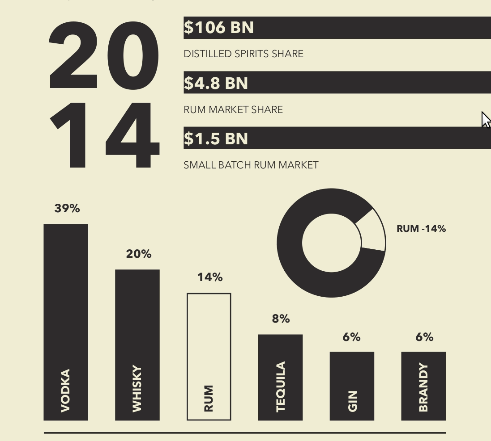
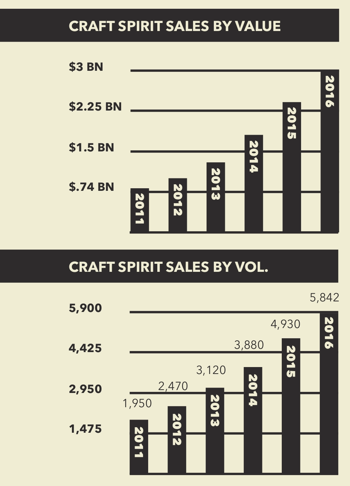

"It's time for it to happen with rum"
- Dorothée Heriard Dubreuil, Director of Brand Marketing, Mount Gay Rum at Rémy Cointreau USA.
THE U.S. SPIRIT MARKET
The US spirits segment has been steadily growing over the past decade. Volume has been rising at a compound annual growth of 2% over the last 10 years with revenues at a CAGR of 4%.
It’s a healthy market - with growth on most ends to capitalize on, we believe our product will be in the exact right position to partake, if not indulge in, the dark, craft and ultra-premium sector’s growth rates.
The Rhum Sector
The Rum sector is expecting value growth in the next four years. Although a report by just-drinks/I - WSR stated seeing total volumes in the rum sector dropping by a CAGR of about 1.73% up to 2019, once value and low-priced rums are stripped out, volumes in the premium categories are set to increase by well over 5.5m cases - reaching nearly 64.5m cases by 2019. We’re already seeing growth at the high end of the category.
This shows us the feasibility of our penetration. Given that our projected market share is dwarfed by the projected market growth, we won't have to resort to taking shares away from existing players. We will be part of the change.
Craft and ultra-premium Spirits
This consumer-led movement is most advanced within beer, but is growing rapidly in spirits as well. In fact, spirits positioned as “craft” accounted for one in seven (15%) new global spirit launched in 2016.
The craft spirit industry has been growing with revenue outpacing volume and with the US being one of the top markets for ultra-premium spirits growth (up 3.3% to 435,000 cases), there is more than ample room for penetration and growth.
In addition to the dedicated rum market gaining traction, the category’s premium-ization rise is also driving the high end of the rum market. In 2016, the ultra-premium category also saw an increase at 7.1% in annual sales.
Sipping rums are being affectionately referred to as "the whisky man’s renaissance”. This indicates rums capability to hold its own on the shelf next to a single malt. Even parallel dark or premium products such as cognac are benefiting from the growth in brown spirits, as consumers seek spirits with depth and character.
Being associated with dark spirits, the ultra-premium segment is showing sustained growth across categories, with Millennial drinkers developing a greater appreciation for quality, authenticity and heritage.
“There are three underlying consumer trends within the industry that are influencing the renewed growth of American whisky, particularly at the premium end, foodie culture, retro revival and the artisanal and craft boom.”
- Chris Morris, Woodford Reserve Master Distiller